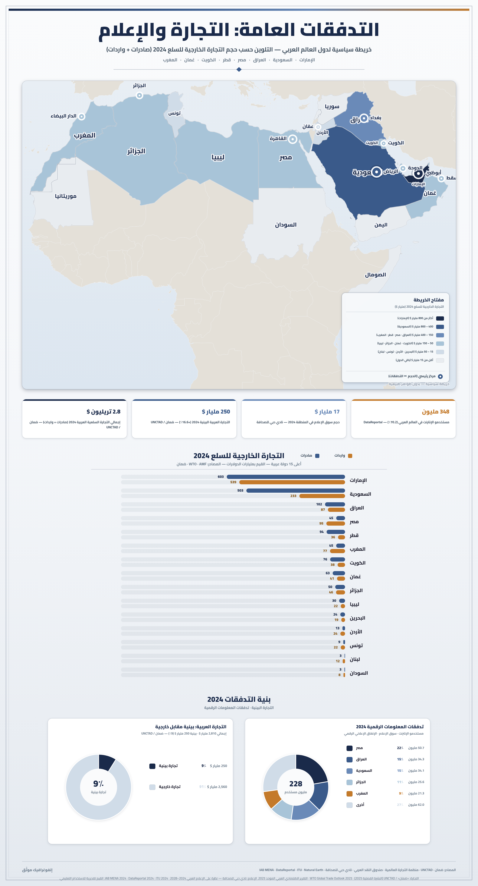

تمارين – الأدفاق الماديّة واللاّماديّة بالعالم العربي
- الأدفاق الماديّة:
- حركة تنقّل السلع والأموال بين البلدان العربية فيما بينها أو بينها وبين الخارج، وتشمل التجارة والاستثمارات المباشرة وعائدات السياحة والديون الخارجيّة.
- الأدفاق اللاّماديّة:
- أدفاق الإعلام والمعلومات بين البشر بواسطة وسائل أساسيّة (الصحافة والإذاعة والتلفزة والهاتف) وثانويّة (السينما والمسرح والكتب) ومتطوّرة (الأقمار الصناعيّة والأنترنات).
- المناخ الاستثماري:
- مجموع الشروط الاقتصادية والسياسية والقانونية والإدارية التي تؤثّر على جذب الاستثمارات المحلّية والأجنبيّة نحو بلد معيّن. ويُعدّ عدم استقراره في العالم العربي السبب الرئيسي لضعف الاستثمارات البينيّة والأجنبيّة.
- الاستثمار الأجنبي المباشر:
- استثمار تقوم به شركات أو مؤسّسات أجنبيّة في بلد عربي بهدف إنشاء مشاريع أو المشاركة فيها أو شرائها. وقد بلغ 46,7 مليار دولار بين 1995 و2003، أي أقلّ من 1% من الاستثمار الأجنبي العالمي.
- الفجوة الرقميّة:
- التباين في الوصول إلى تكنولوجيات المعلومات والاتصال واستخدامها بين البلدان المتقدّمة والبلدان النامية. وتتجلى في العالم العربي في محدوديّة عدد مستعملي الأنترنات (4,2 مليون فقط سنة 2003، أي 1,6% من السكان) مقارنة بالبلدان المتقدّمة.
| نوع التجارة | النسبة (%) |
|---|---|
| الصادرات البينيّة من مجموع الصادرات العربيّة | 14.8 |
| نسبة المواد الخام والمحروقات من الصادرات البينيّة | 52.2 |
| نسبة المحروقات من الصادرات العربيّة إلى الخارج | 71.6 |
| نسبة المواد الصناعيّة من الواردات العربيّة من الخارج | 75.3 |
المصدر: معطيات الدرس حول الأدفاق الماديّة بالعالم العربي


تمثّل الخريطة اتجاهات الأدفاق الماديّة واللاّماديّة بين العالم العربي والخارج، وتبرز محدوديّة مساهمة العالم العربي في هذه الأدفاق: - أدفاق السلع: التجارة العربيّة البينيّة محدودة (14,8% من الصادرات) وتقتصر على شركاء مجاورين. والتجارة مع الخارج تتمّ أساسًا مع الثالوث الاقتصادي، حيث يزوّد الاتحاد الأوروبي العالم العربي بـ 44,2% من وارداته ويستقبل 27,6% من صادراته. وتهيمن المحروقات على 71,6% من الصادرات، والمواد الصناعيّة على 75,3% من الواردات. - الأدفاق الماليّة: الاستثمارات البينيّة العربيّة بلغت 13,9 مليار دولار (1980–1999)، والاستثمار الأجنبي المباشر 46,7 مليار دولار (1995–2003) أي أقلّ من 1% عالميًا. عائدات السياحة 11,103 مليون دولار (2,5% عالميًا)، والديون الخارجيّة 147,1 مليار دولار (2003). - الأدفاق اللاّماديّة: 120 قناة فضائيّة (70% حكوميّة)، أقلّ من 53 صحيفة لكلّ 1000 شخص (مقابل 285 في البلدان المتقدّمة)، 330 كتاب مترجم سنويًا، و4,2 مليون مستعمل للأنترنات (1,6% من السكان). والنّتيجة: ضعف كبير في مساهمة العالم العربي في الأدفاق العالمية يعكس هشاشة بنيته الاقتصادية والمعرفية.
- مقدمة: تحديد مفهوم الأدفاق وموقع العالم العربي منها في ظلّ العولمة.
- تطوير: أولاً. موقع العالم العربي في الأدفاق العالمية؛ ثانياً. محدوديّة الأدفاق الماديّة؛ ثالثاً. محدوديّة الأدفاق اللاّماديّة؛ رابعاً. العوامل المفسّرة.
- خاتمة: ضرورة تجاوز التبعيّة وبناء اقتصاد ومجتمع المعرفة.
مقدمة
في ظلّ العولمة التي جعلت العالم قرية صغيرة، أصبحت الأدفاق الماديّة (السلع والأموال) واللاّماديّة (الإعلام والمعلومات) محرّك التنمية الاقتصادية والاجتماعية. غير أنّ العالم العربي، رغم ثرواته الطبيعية والبشرية، لا يزال يشغل موقعًا هامشيًا في هذه الأدفاق، وهو ما يطرح السؤال عن مكانته الحقيقية في الاقتصاد العالمي.
تطوير
أولاً. موقع العالم العربي في الأدفاق العالمية
يظلّ موقع العالم العربي هامشيًا في الأدفاق العالمية: فالصادرات العربيّة لا تتجاوز 4% من الصادرات العالمية، والواردات 2,5% من الواردات العالمية. وتُعدّ التجارة العربيّة البينيّة محدودة (14,8% من الصادرات) وتقتصر على شركاء مجاورين. أمّا الاستثمارات، فلم تتجاوز 46,7 مليار دولار (1995–2003)، أي أقلّ من 1% من الاستثمار العالمي.
ثانياً. محدوديّة الأدفاق الماديّة
تعاني الأدفاق الماديّة العربية من محدوديّة كبيرة: فهيمنة المحروقات على 71,6% من الصادرات والمواد الصناعيّة على 75,3% من الواردات تعكس تبعيّة الاقتصاديات العربية وتنويعها الضعيف. ويعود ضعف الاستثمار البيني (13,9 مليار دولار بين 1980 و1999) إلى عدم استقرار المناخ الاستثماري، وضعف البنية الأساسية، وعدم الاستقرار السياسي في العديد من البلدان العربيّة.
ثالثاً. محدوديّة الأدفاق اللاّماديّة
تُظهر الأدفاق اللاّماديّة ضعفًا بنيويًّا واضحًا: فعدد الصحف العربيّة لا يتجاوز 53 صحيفة لكلّ 1000 شخص مقابل 285 في البلدان المتقدّمة، وحركة الترجمة ضعيفة (330 كتابًا سنويًا فقط)، ومستعملو الأنترنات لا يتجاوزون 4,2 مليون (1,6% من السكان)، وهو ما يعمّق الفجوة الرقميّة بين العالم العربي والعالم المتقدّم.
رابعاً. العوامل المفسّرة والحلول الممكنة
يعود هذا الضعف إلى جملة من العوامل: ارتباط التجارة بالريع النفطي، والتبعيّة التكنولوجيّة، وضعف القدرة على المنافسة، وتخلّف البنية الأساسية. ولتجاوز هذا الوضع، يتعيّن على الدول العربيّة تبنّي سياسات طموحة للتنويع الاقتصادي، والاستثمار في التعليم والبحث العلمي والرقمنة، وتعزيز التكامل الاقتصادي العربي، وتحسين المناخ الاستثماري لجذب الاستثمارات الأجنبيّة المباشرة.
خاتمة
وهكذا يبقى العالم العربي في موقع هامشي ضمن الأدفاق العالمية للسلع والأموال والمعلومات، وهو ما يستوجب إرادة سياسية جماعية وخططًا تنموية جادّة لتجاوز التبعيّة وبناء اقتصاد ومجتمع المعرفة قادر على المنافسة العالمية.